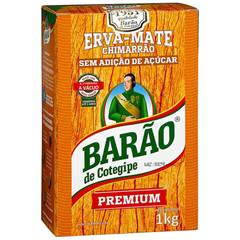

Welcome to Yerba Mate Matcher

Whether you’re new to yerba mate or a seasoned veteran, we’re here for you every step of the way. Check out our What is Yerba Mate page to get caught up on the culture, or spend some time on the Mate Matcher to find the best yerba for you.
Find your match in the gallery

Barão de Cotegipe
Price: $$$
Bitterness: 4/5
Grind: very fine
Country of Origin: Brazil
Description: A very fine ground yerba vacuum-sealed to preserve a fresh, green taste. The perfect mix between bitter and smooth
Contribute to the community
- Weekly newsletter
- Community member Discord
- Member verification on mate reviews